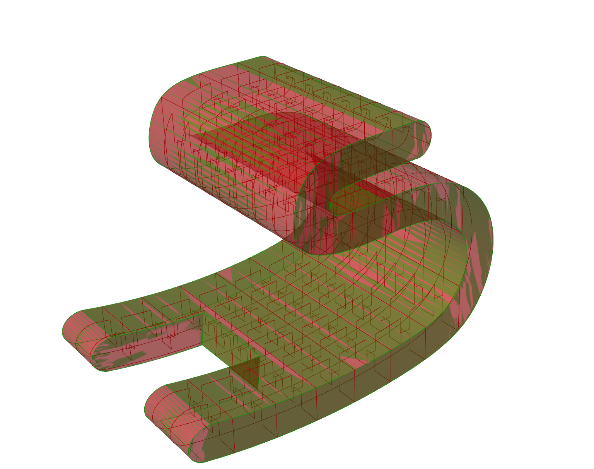
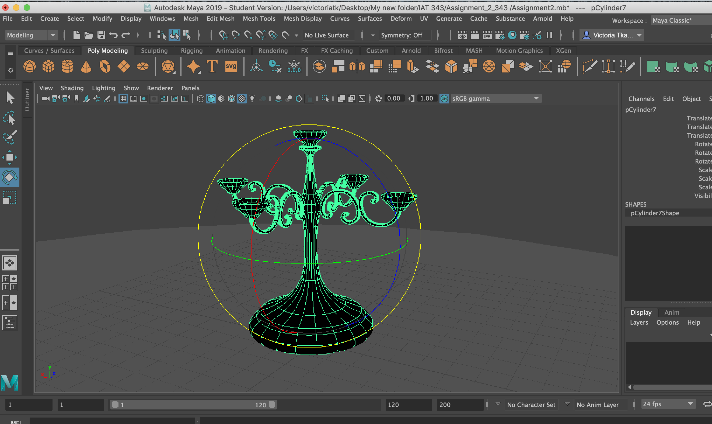
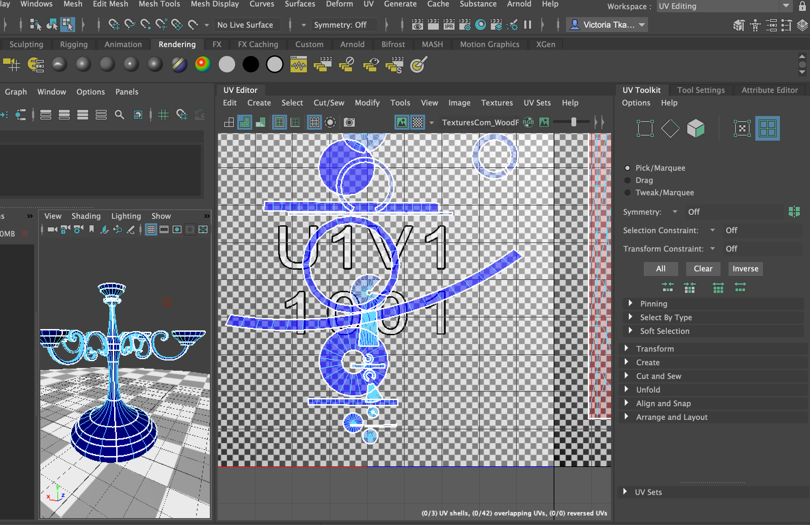
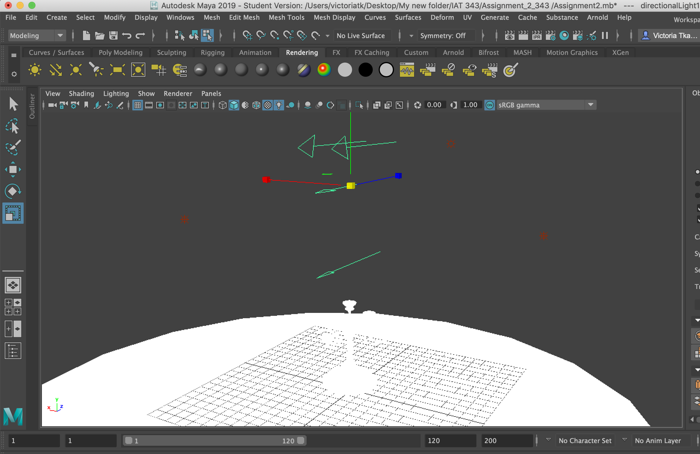
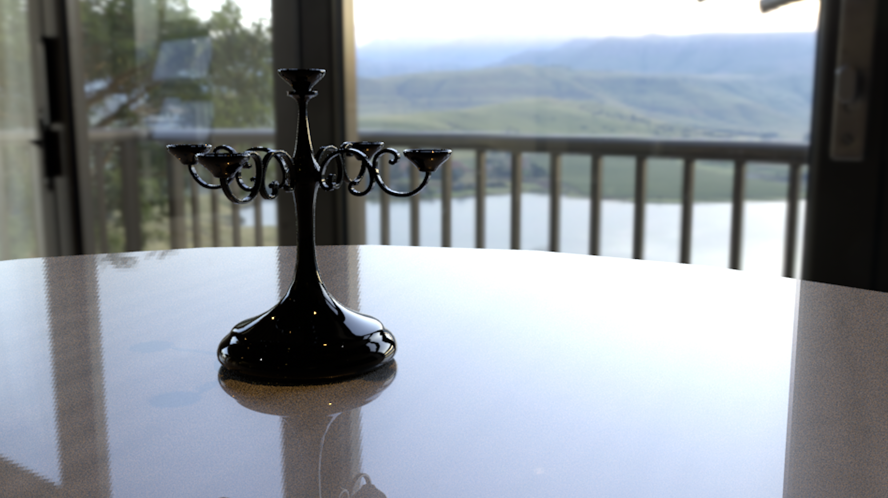

Project 1:This Chair is Not a Chair

This Chair is Not a Chair
Overview
The aim of this group project was to plan a parametric sitting surface applying rapid sketching for a quick prototyping of ideas, further developed by CAD tools supporting surface and solid modeling.
The limitation we faced was the requirement of single seat dimensions for our model, which limited our flexibility when creating it. We designed the final model considering these proportions, which had a limit of a “24 x24” bounding box. Additionally, the final model had to provide an aesthetically pleasing and satisfying form, such that it can be utilized as an art object.
Individual work
This project was done in a group of two. My partner, Fatima Imran was working on the first part of the sketch by drawing up existing chairs.
Fatima also used the program Grasshopper to make the connections between the model made in Rhino, and then used the Grasshopper diagram to waffle the final design. For myself, I sketched different variations of the same model and I modified it by expanding and transforming the shape of the chair. I also worked on the digital modeling aspect of which was done in a Rhino.
Solutions
Our solution involved two main steps, respectively; Sketching and Digital Modeling.
Sketching:
This step involved sketching quick ideas of our model. My partner, Fatima Imran sketched existing chair models a base for inspiration.
The second step involved modification and further expansion of my sketch. Focusing on a single main idea I explored possible solutions to achieve the needed design
Digital Modeling:
We used Rhino and Grasshopper to develop digital design models.
In Rhino I started with two curves and then connected using EdgeSrf tool to create a surface. The next step was to add thickness to the surface using EXTRUDESRF tool. Finally I created a square shape and attached it to the bottom of the chair. Then applied The BooleanDifference command trims the shared areas of selected polysurfaces or surfaces with another set of polysurfaces or surfaces.
Fatima created a waffle structure from a rhino mesh, then defined, created, and assigned the chair to BBWaffle and used our dimension parameters to create the waffle model.

Outcome
The overall design of the chair was graded as a good model. However, the only problem that our group did not consider was a small sitting surface. In order to fix that we could extrude the top part of the sitting surface using transformation tool in Rhino.
Photo-realism
Overview:
The goal of this project is to create two photo-realistic renders of the same 3D virtual environment and one main object occupying the scene. To accomplish this task I had to
combine techniques of modeling, texturing, and lighting in a software called Maya.

Building a model (candelabra):
I started to build my candelabra by first making a polygon cylinder to use as my base. Then using the extruding tool I selected the upper surface and extended it upwards, creating the column of my candelabra. I then add divisions to the column in order to reshape the central sections. Once the core section was completed, I started building the labras (handles) using the same aforementioned technique used for my core section. While also, making adjustments to achieve the curvy shape. Finally, I used the ellipse shape to create the drip pans, the capitals, and sconces which hold the candlestick.

UV mapping:
In the UV Editor I first selected each section individually.Then, In the same order I cut each section in half. Finally, I unwrapped each section to create the UV projection seen in the picture above.
Texturing:
To achieve the texture of my back I inserted a panoramic photograph from the web. Due to my plan of having a black glossy I chose a background which has a source of natural light that would contrast with the color of my candelabra. For the Candelabra itself, I used blin textures pre loaded in the program, and adjusted the color and glossiness to create the realistic look.

Lighting:
For the lighting of my project I used three types of lights; Point light, directional light and ambient light to create a more realistic scene. After creating my directional light, I found that it was not giving the effect that I wanted to create with the combination of natural light and room light. I adjusted the room light to a warmer color so that the warm atmosphere inside (candelabra and warm lightning inside) combined with the perception of a colder weather outside (cold/blue natural light from window) enhance the realism of my project.

The description of the achieved environment:
My Project “Photo-Realism” features a candelabra standing at the center of the dinner table during a late afternoon in a summer house. The setting of the scene is happening in an indoor environment and features an atmosphere typical in a summer house during times of the year. The depth of the room creates a darker and gloomier feeling by decreasing the amount of natural light and giving the room light a deeper color. This was done to achieve the desired atmosphere that I wanted to created for my project as mentioned in the section concerning Lighting
Project “Photo-realism” features a candelabra standing in the middle of a dinner table in a summer house, during the late afternoon. The scene setting is occuring in an indoor environment and features a vibrant natural white light in conjunction with a faint indoor light.
Results
I faced a few challenges while creating this project. First, the item that I chose provoked a lot of critical thoughts around creating a scene that would place my item as most distinguishable. Since I did not have candle sticks to transfer the warm mood usually associated with a candelabra I had to use indoor and outdoor lighting for assistance. To summarize from previous sections; I had to find a background image that would have the amount of natural light and room light I need to adjust them accordingly.